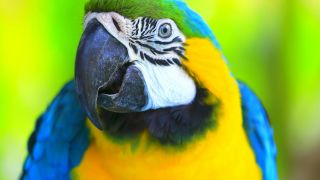

Los pulpos, su inteligencia es un tema que cada vez atrae más la atención de los científicos. Estas criaturas, a medio camino entre un alien del océano y un cerebro con ventosas, disponen de una mente asombrosa. Un detalle, los más de 500 millones de neuronas que poseen los cefalópodos están en sus tentáculos, y con ellos exploran, sienten, huelen y hasta toman decisiones.
Quienes trabajan en acuarios o en oceanográficos saben que los animales que más problemas suelen dar son los pulpos. Todos los responsables de estas instalaciones suelen contar historias fascinantes sobre cómo dichos animales se las ingenian para escaparse e incluso para introducirse en tanques cercanos y robar comida de otras especies marinas. Son fascinantes.
Para muchos científicos, en cambio, la inusual inteligencia de los cefalópodos no tiene nada de destacable. Hay quien dice que todas esas habilidades responden a una simple inteligencia ecológica. Es decir, los animales desarrollan determinadas estrategias en función de las demandas del entorno. Por tanto, los pulpos no son más que esos seres que se las ingenian bien para obtener alimento de casi cualquier lugar.
No obstante, hay un dato llamativo. Piero Amodio, científico de la Universidad de Padua, Italia, grabó un vídeo que no tardó en hacerse viral. En él, vemos a un pulpo que se las ingenia para obtener una concha y poder meterse dentro. Más tarde, el animal se la guarda y se la lleva porque sabe que es su “herramienta” y que le puede ser útil de las más ingeniosas maneras. Ahí vemos claramente una planificación.
LORO
| LORO | ||||||||
|---|---|---|---|---|---|---|---|---|
| Los loros tienen el mismo nivel de inteligencia que los monos –e incluso razonan mejor que ellos–, aunque sus habilidades cognitivas son menores que las de los grandes simios y las de los niños de dos años, según una investigación realizada por el Instituto Max Planck para la Ornitología y Loro Parque Fundación y que lidera la alemana Auguste von Bayern. “Sabíamos que los loros son unos animales muy inteligentes pero hasta ahora no se habían comparado sus capacidades con las de otras especies; y lo que hemos visto es que, realizando las mismas pruebas que ya se han hecho con grandes primates, niños y monos pequeños, los loros están por encima de estos últimos y son capaces de resolver problemas que ni sospechábamos”, explica Rafael Zamora, biólogo de Loro Parque Fundación. |  | Los experimentos, realizados con 39 loros de cuatro especies diferentes –guacamayo barbazul, guacamayo militar gigante, guacamayo de cabeza azul y loro gris africano–, han consistido en una amplia batería de pruebas para ver el desempeño cognitivo de estos animales y determinar su nivel de inteligencia técnica y social. “Hemos comprobado que, en general, los loros obtienen en las pruebas resultados peores que los grandes simios y los niños, pero comparables a los de los monos en todas las tareas excepto en el dominio del razonamiento causal, en que su capacidad es superior a la de los monos y comparable a la de los chimpancés”, indican los autores de la investigación. Y apuntan que el hecho de que los resultados de los loros sean peores que los de los grandes simios podría estar condicionado por la juventud de los ejemplares que participaron en los experimentos, pues sólo tenían un año.Los loros tienen el mismo nivel de inteligencia que los monos –e incluso razonan mejor que ellos–, aunque sus habilidades cognitivas son menores que las de los grandes simios y las de los niños de dos años, según una investigación realizada por el Instituto Max Planck para la Ornitología y Loro Parque Fundación y que lidera la alemana Auguste von Bayern. “Sabíamos que los loros son unos animales muy inteligentes pero hasta ahora no se habían comparado sus capacidades con las de otras especies; y lo que hemos visto es que, realizando las mismas pruebas que ya se han hecho con grandes primates, niños y monos pequeños, los loros están por encima de estos últimos y son capaces de resolver problemas que ni sospechábamos”, explica Rafael Zamora, biólogo de Loro Parque Fundación. | ||||||